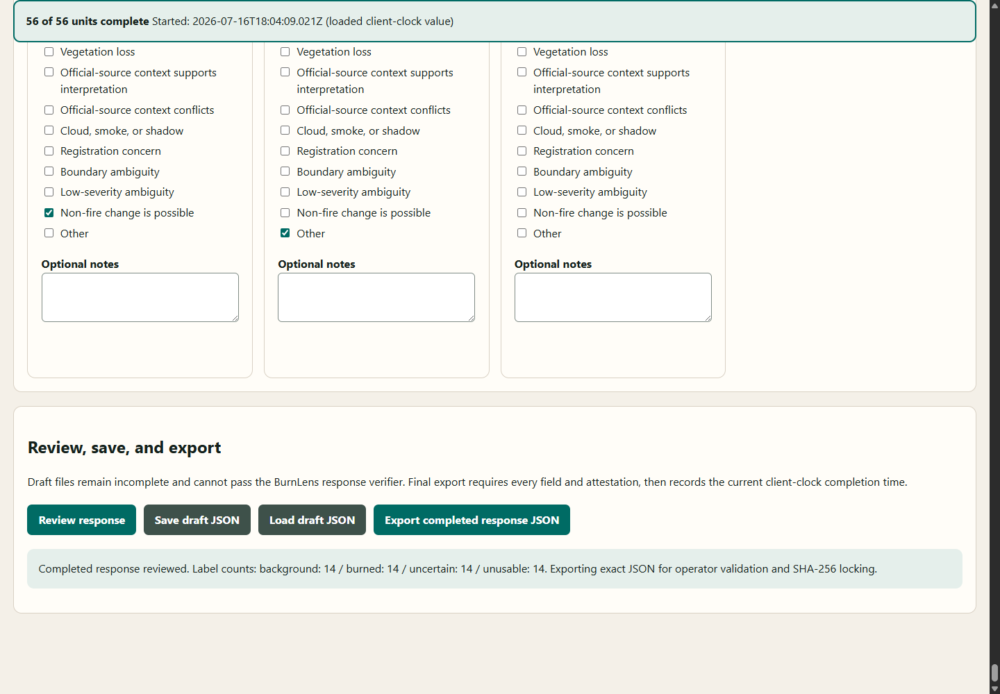
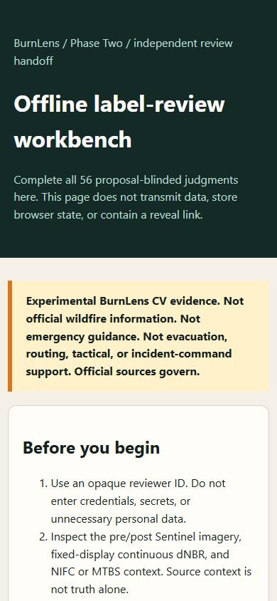

Experimental BurnLens CV evidence. Not official wildfire information. Not emergency guidance. Not evacuation, routing, tactical, or incident-command support. Official sources govern.
Decision
PASS_LIVE_BROWSER_RESPONSE_ROUNDTRIP_NO_HUMAN_EVIDENCE_DEFER_DATASET
The exact extracted offline workbench completed invalid-state, draft download/load, all-unit review, response export, responsive viewport, and fixture-only response-lock checks in the recorded current browser. The software fixture cannot count as an independent response or authorize reveal.
Actual browser evidence


Observed roundtrip
- Loaded 8 of 8 proposal-blinded images and all 56 labelled unit forms in
Chrome/150.0.7871.124. - Incomplete review reported 61 issues, highlighted all units, focused the error surface, and produced no response download.
- A seven-unit draft downloaded, the form cleared, and the native file input restored the exact reviewer fields, first label, and 7-of-56 progress.
- All 56 software-fixture entries reviewed and exported; exact label counts were 14 burned, 14 background, 14 uncertain, and 14 unusable.
- Console errors: 0; runtime exceptions: 0; inspected-page external request schemes: 0; cookies and local-storage entries: 0. The QA controller itself uses a short-lived loopback DevTools connection outside the page-network observation boundary.
- The response lock decision is
PASS_SOFTWARE_FIXTURE_CONTRACT_AND_HASH_LOCK_NO_REVEAL; the software fixture cannot authorize reveal.
Traceability and boundary
Run: BL-2026-07-16-label-review-browser-qa-r001
Git source: 74275a061fb4054a535cc8b660bebb0021999c54
Archive SHA-256: 12f4cbe3d7903b2c404d5dfafbc141c35afa74e51c5d0b9a1816c65f82b8d8cc
Browser binary SHA-256: 40ad3d87ea81270f36137e6f84fb36e9a2236aedd835696dd663ac1a27dd1b13
Application: label-review-handoff-workbench-v0.1.0
Dataset / split / baseline / model: none / none / none / none
Independent human responses / adjudications used in this QA: 0 / 0. This run does not establish the project-wide response count.
- Not proven: One recorded Chromium run is not cross-browser certification, formal accessibility conformance, reviewer identity or expertise verification, independent human review, label fitness, adjudication, field validation, or accuracy.
- Not proven: No accepted label set, dataset, split, baseline, model, deployment, official status, endorsement, or operational readiness exists.